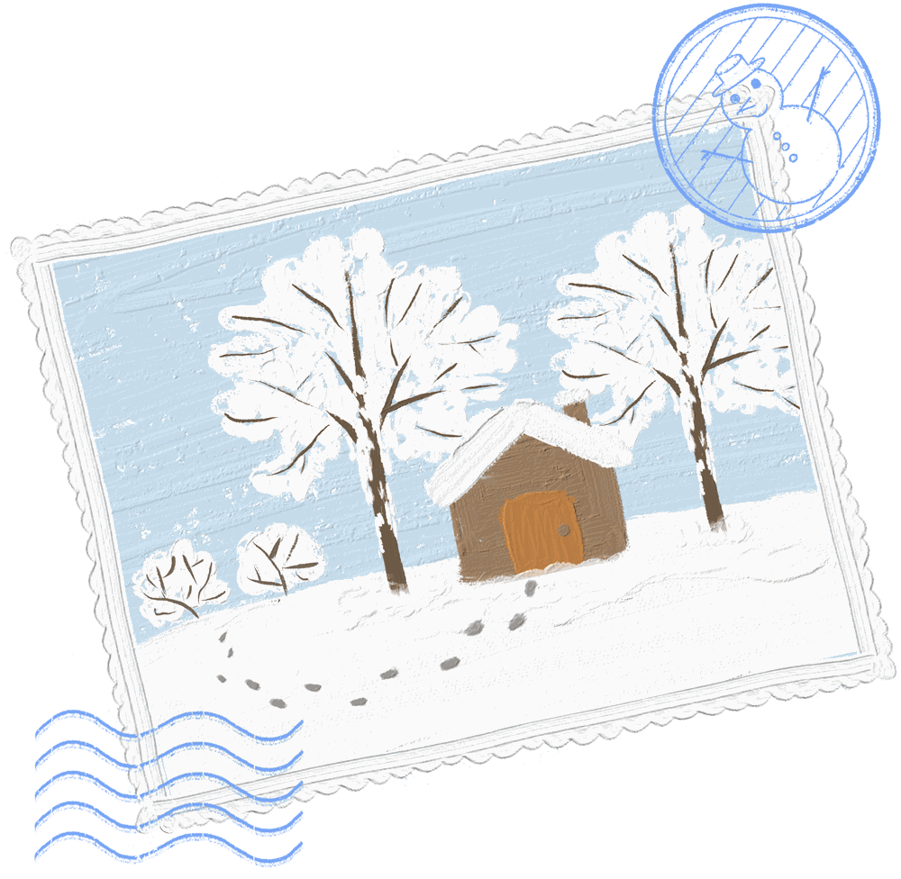
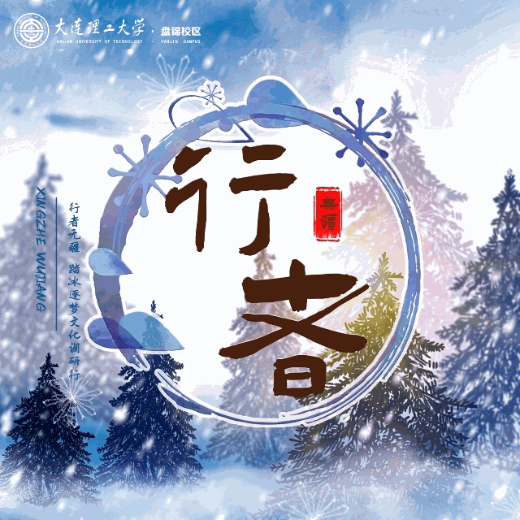
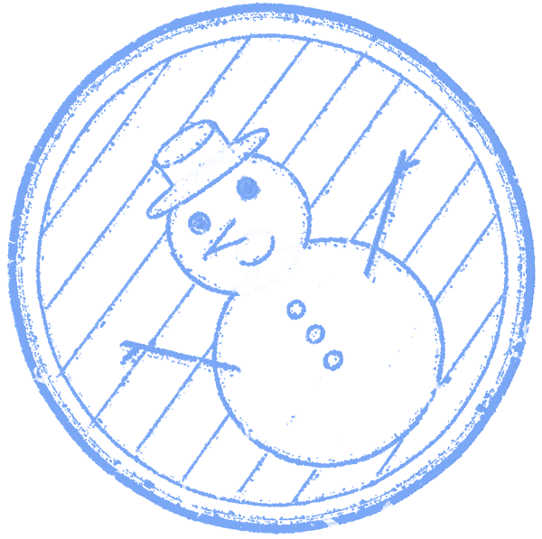
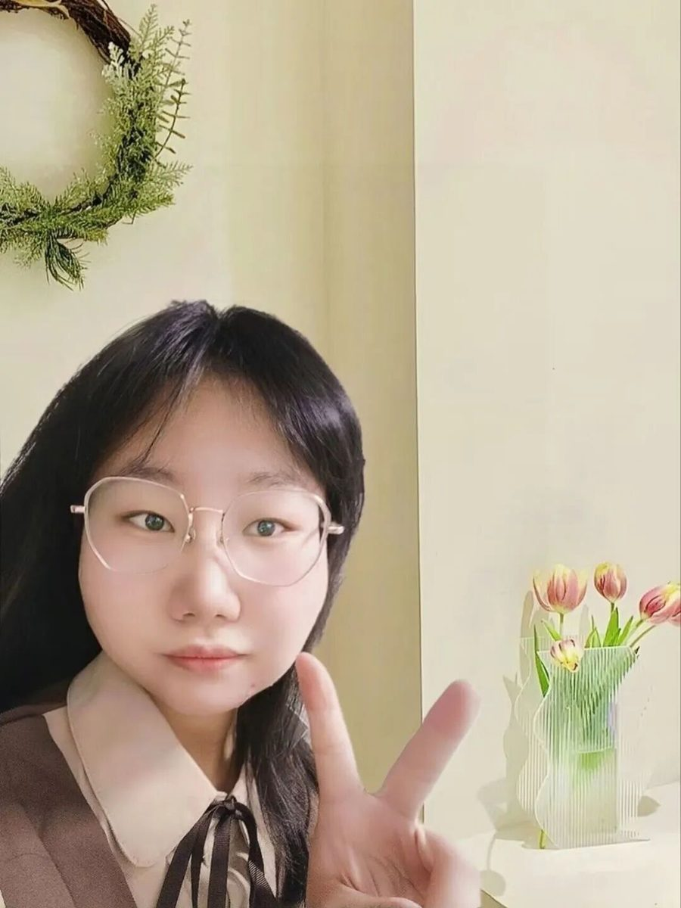
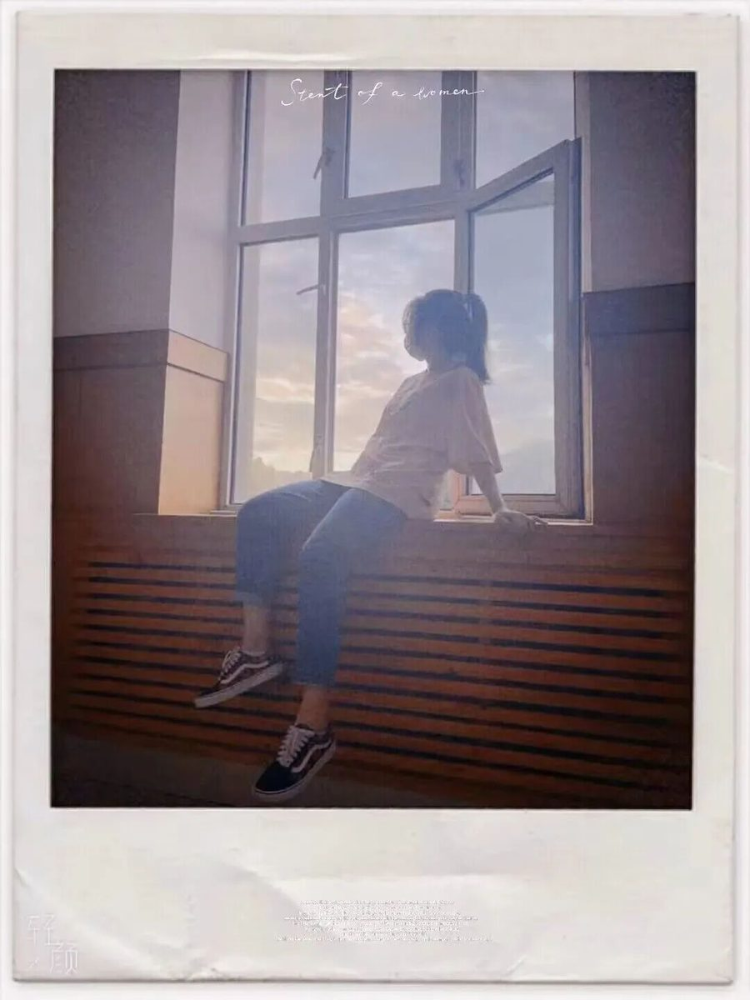
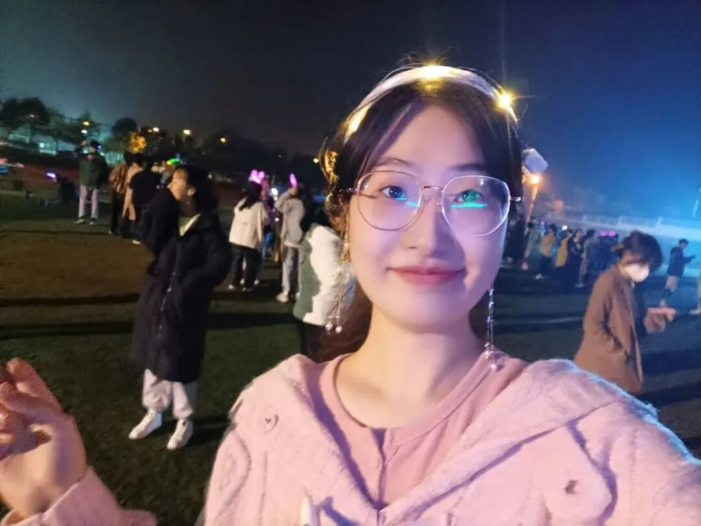
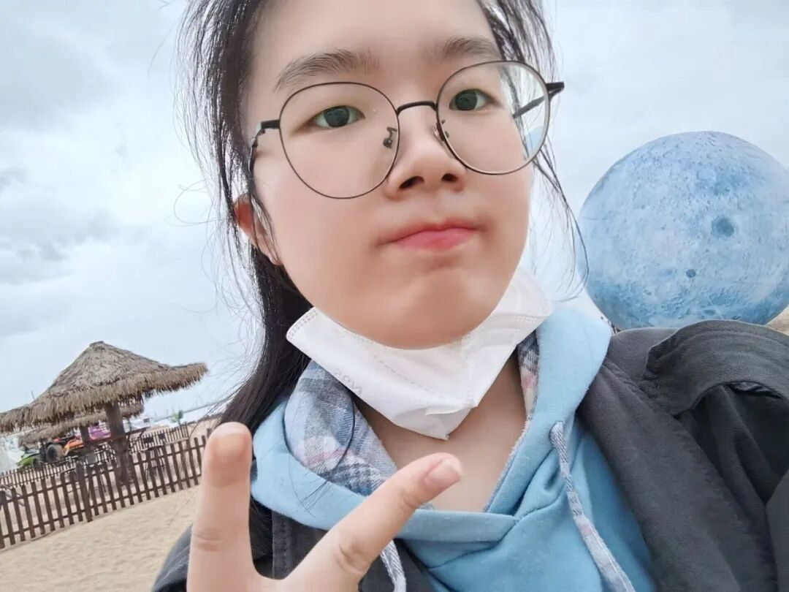
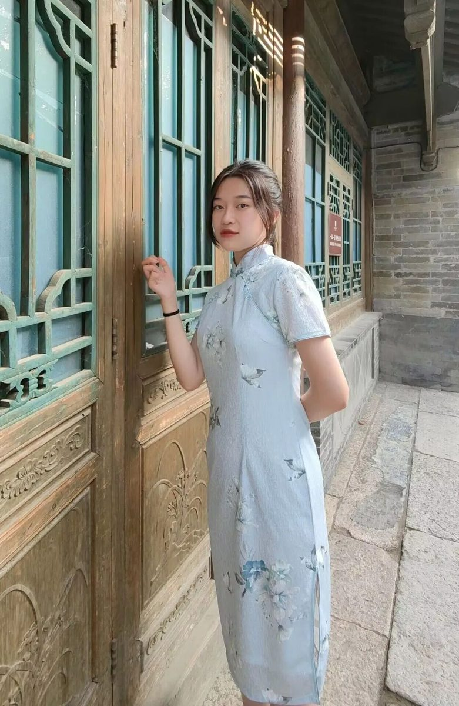
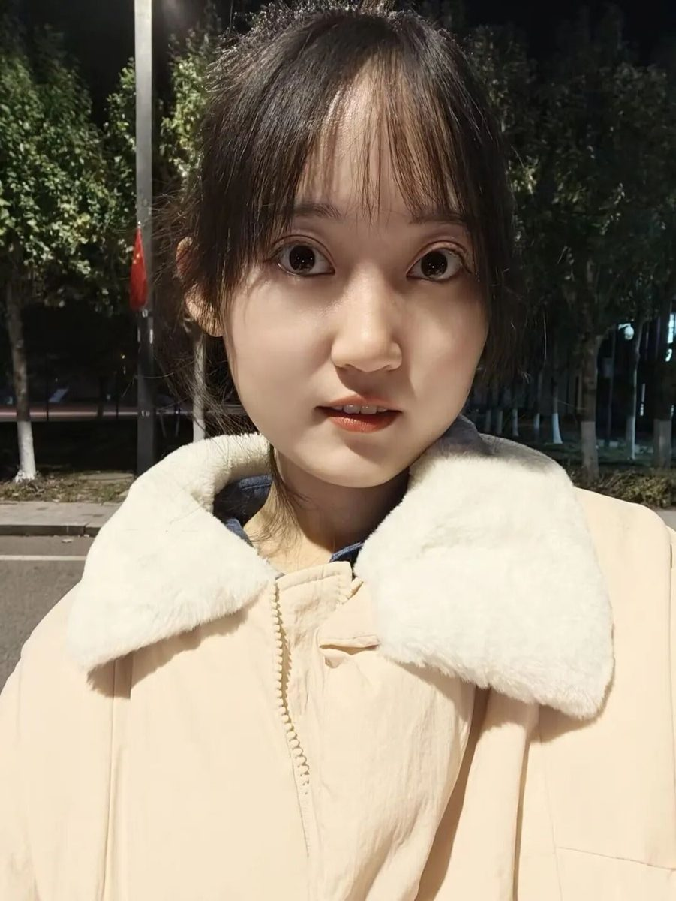
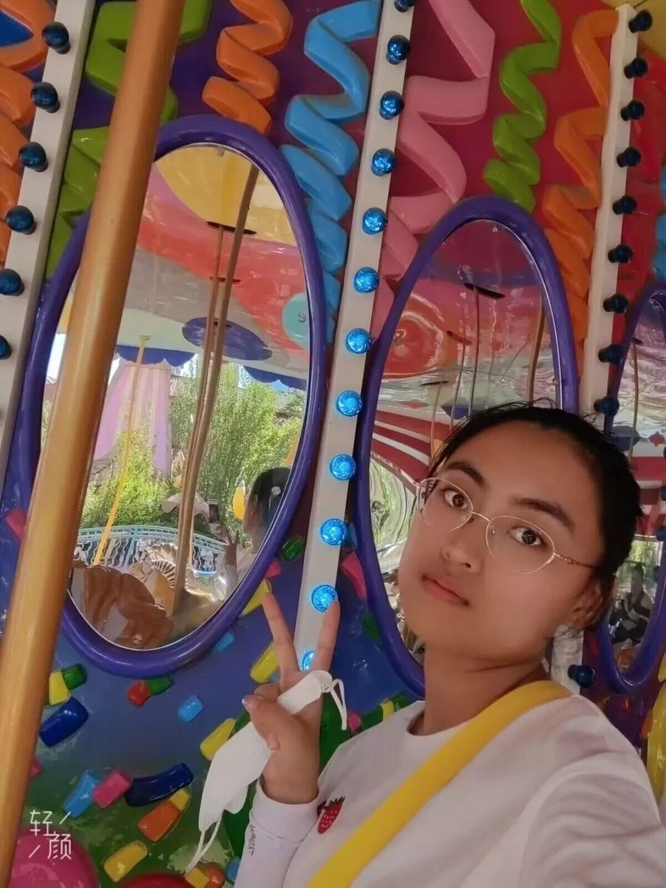

行者无疆·踏冰逐梦 | 我们来啦！
第十二期
行者
无疆

This Winter
“雪月最相宜，遥祝君安好”
行者无疆·踏冰逐梦
文溯齐鲁 知遇中原
致旅吴越 拾遗皖徽
韶忆长安 源洄渝州
言念潇湘 聆谂丝韵
寓绻淮扬 赓续前行
流眄苏杭 踏冰逐梦
我们穿越春夏秋三季
与冬日新雪撞个满怀
行者们踏上冰雪文化的征途第十二期行者无疆集结！

冰树琼脂，踏冰逐梦

邹靓靓
穷理以致其知，反躬以践其实。
For Knowledge

崔雨琪
——队长
期遇广阔无限世界，
期待永不设限的自己。
行者无疆 踏冰逐梦

杨婧葳
——副队长兼调研专员
喜欢的日子就是好日子。
行者无疆 踏冰逐梦
徐晓彤
——副队长兼文字组组长
生活明朗，万物可爱，
人间值得，未来可期。
行者无疆 踏冰逐梦
温兆琪
——采访组组长兼文字专员
与欢乐同行，与自如常伴。
行者无疆 踏冰逐梦
周奕彤
——宣传组组长
去做不被定义的风，
一览江山河海。
行者无疆 踏冰逐梦
董一
——美工组组长
对生命的恒常有祝福之念，
对生命的变化有宽容之心。
行者无疆 踏冰逐梦
殷心怡
——外联组组长兼文字专员
愿我能带上最单薄的行李和最丰厚的自己在世间流浪。
行者无疆 踏冰逐梦

丁稼桐
——文字、采访专员
不大声呼喊爱世界，
但会温柔注目每一天。
行者无疆 踏冰逐梦

邓雪
——文字、采访专员
靡不有初，鲜克有终。
行者无疆 踏冰逐梦

张霖茜
——文字、宣传专员
所谓无底深渊，
下去，也是前程万里。
行者无疆 踏冰逐梦
樊星烁
——调研、美工专员
去探索 去创造 去发现 去追寻
行者无疆 踏冰逐梦

石耘嘉
——外联、采访专员
像太阳一样有起有落
却不失光彩。
行者无疆 踏冰逐梦
杨涵凯
——采访专员
心若有所向往，何惧道阻且长。
行者无疆 踏冰逐梦

张越
——外联、调研专员
Life not worth living if you not take risk.
行者无疆 踏冰逐梦

芦奕文
——外联、宣传专员
背上行囊，奔赴下一场山海。
行者无疆 踏冰逐梦
我们相约在2023的冬天
行者们
我们大连、沈阳见！


行
者
这个冬天我们一起踏冰逐梦！
文字 | 行者无疆实践团
图片 | 行者无疆实践团
排版 | 芦奕文
审核 | 周奕彤 崔雨琪